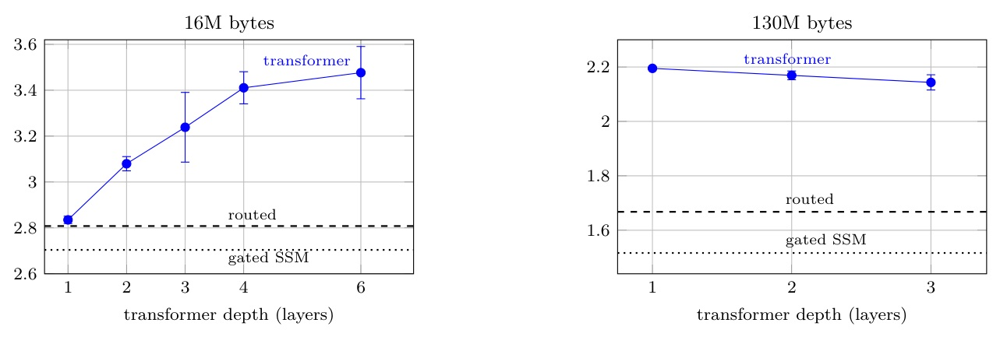

A controlled re-examination of 1.58-bit ternary language models at 60K parameters.
At 60K parameters, baseline shape can decide the architecture verdict before the architecture does.
| Condition | 60K point | 944K point |
|---|---|---|
| Training tokens | about 3M | about 2B |
| Tokens / parameter | about 50 | about 2,100 |
| Sequence length | 64 | 256 |
| Transformer FFN | 1 x d | 4 x d |
| FP routed model? | No | No |
| Experiment | What varies | Runs |
|---|---|---|
| Main grid | Routed / 3x32 transformer; FP32 / ternary; 16M / 130M | 24 |
| Shape sweep | Five transformer shapes; two budgets; both precisions | 36 |
| Gated SSM | Two budgets and both precisions | 12 |
| FP-init + LR sweep | 90/10 schedule and five stage-2 LRs | 28 |
| System | FP kept | Why |
|---|---|---|
| Routed 3-pathway | 2.3% | SSM scalars + LayerNorm |
| Gated SSM | 1.6% | SSM scalars + LayerNorm |
| Transformer 1x52 | 22.0% | plus learned positional embedding |
| Transformer 3x32 | 14.0% | plus learned positional embedding |

| System | FP32 | ternary | Penalty |
|---|---|---|---|
| Gated SSM | 1.516 +/- .012 | 1.942 +/- .018 | +28.1% |
| Routed 3-pathway | 1.668 +/- .024 | 1.993 +/- .032 | +19.5% |
| Transformer 1x52 | 2.195 +/- .003 | 2.311 +/- .003 | +5.3% |
| Transformer 3x32 | 2.143 +/- .028 | 2.328 +/- .004 | +8.6% |
A “parameter-matched baseline” is not one control.
Its shape is part of the treatment.
Against worst 6x24
Routed appears clearly better.
Against best 1x52
Both gaps sit inside the 2-sigma noise bands.
| Pathway | Mean routing weight | Interpretation |
|---|---|---|
| State / SSM | 0.49–0.73 | Dominant |
| Local convolution | 0.09–0.25 | Secondary |
| Sparse attention | 0.19–0.28 | Secondary |
| Arm @130M | vs. scratch | 2-sigma rel. |
|---|---|---|
| Routed, stage-2 1e-4 | +15.3% | 5.2% |
| Routed, stage-2 3e-3 | -4.7% | 3.4% |
| Transformer, stage-2 1e-4 | +7.1% | 1.2% |
| Transformer, stage-2 3e-3 | -2.1% | 0.4% |
The ternary stage may be re-solving weights, not merely fine-tuning them.
| Claim | Status | Why |
|---|---|---|
| Baseline shape can decide verdict | Supported | 5 shapes x 2 budgets |
| Routing is required | Not supported | Gated SSM comparison |
| Penalty is architecture-only | Confounded | FP shares + untuned baseline |
| 3e-3 is optimal stage-2 LR | Not established | Sweep stops there |
Baseline shape dominates the comparison ... the routed model’s advantage disappears against the best-shaped transformer.
「基線形狀主導比較；對上形狀最佳的 transformer，routed 模型的優勢消失。」Abstract p.1
Routing is therefore not required for the advantage.
「因此，routing 並不是這項優勢的必要條件。」§6.2 pp.6–7
A fixed baseline shape ... and an untuned stage-2 learning rate ... each reverse a headline.
「固定基線形狀與未調整的第二階段學習率，各自都能反轉一個標題式結論。」§1 p.2; §8 p.9
Today: ternary LMs at MCU scale · Tomorrow: AI agents / multimodal systems